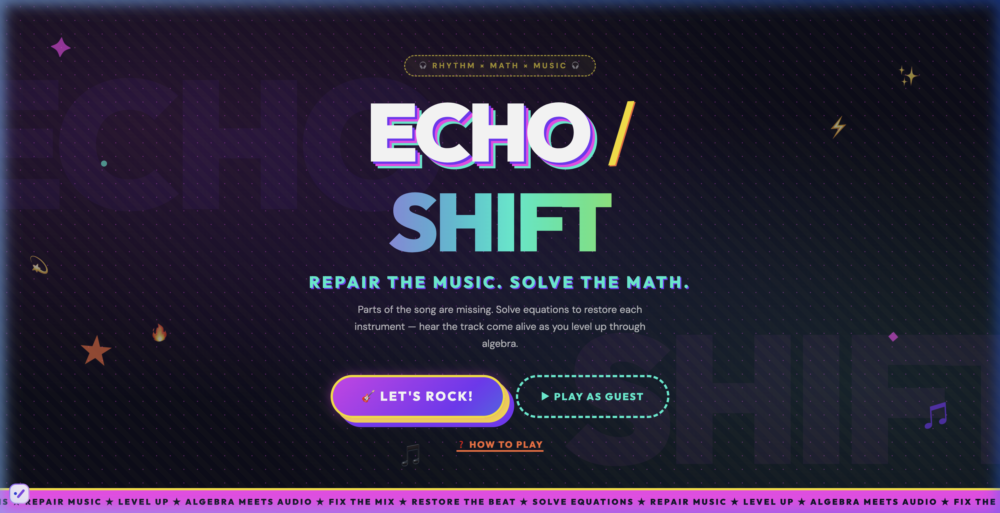
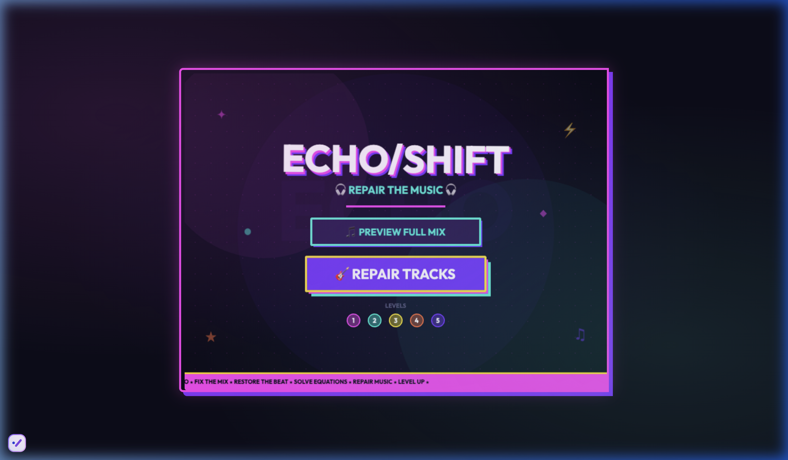
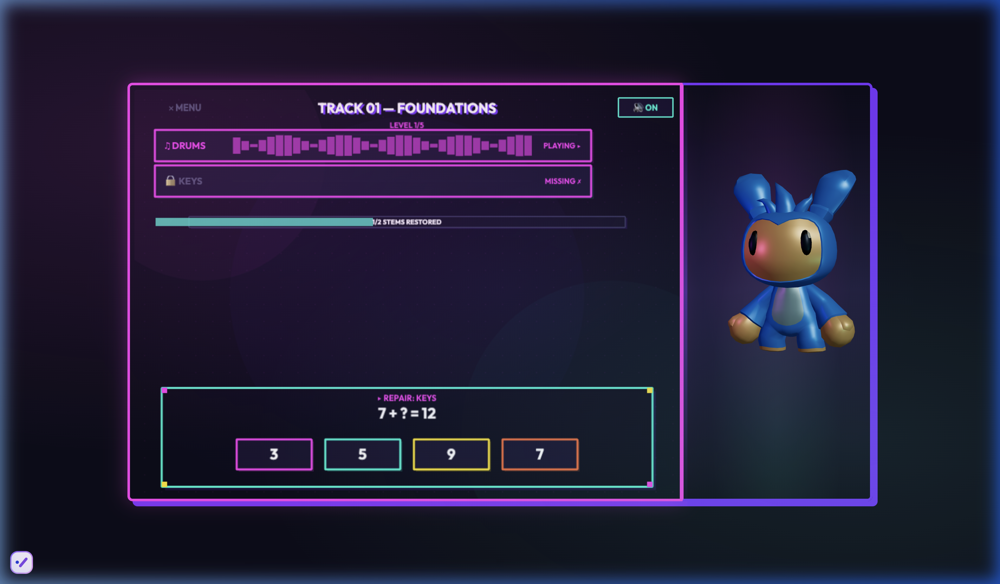
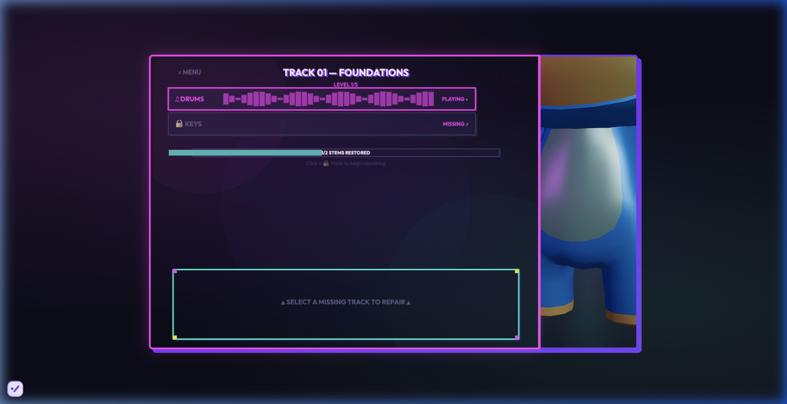
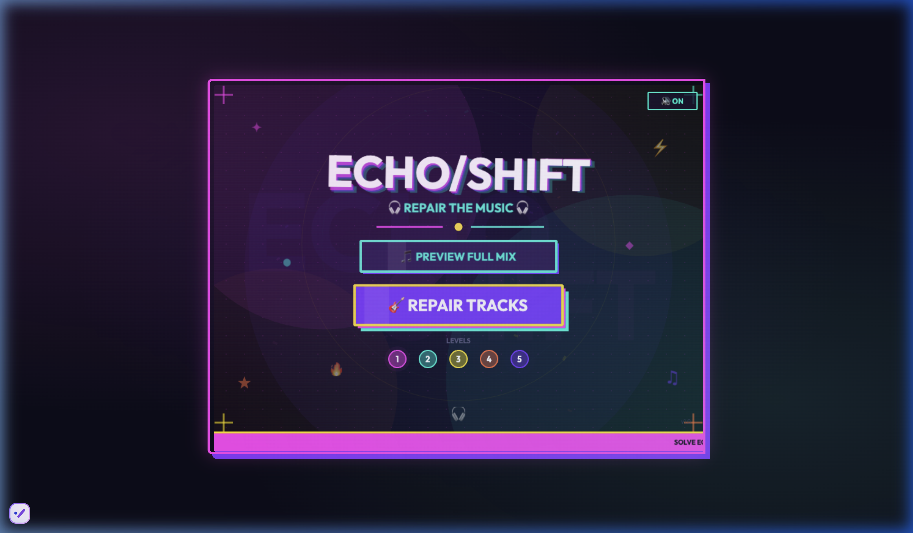

Repair the Music. Solve the Math.

So many people struggle with math and it makes it hard to have fun with it. But I wanted to make it fun and educational at the same time. Existing math games often feel like thinly disguised quizzes — you answer a question, get a star, move on. There's no real motivation to keep playing.
When I was younger I would sing and listen to music all the time (I still do) and I realized that math and music had a lot in common — rhythms, beats, fractions, etc. So I wanted to make a game that would help people learn math while also having fun.
I wanted to build something where the math IS the gameplay, not a quiz with a game skin on top. Something where getting the right answer doesn't just earn points — it creates something you can actually hear and feel.
Grooving with Math is a rhythm-based algebra game. How it works: a song plays, but some instruments are missing — you'll hear gaps where the music should be. To repair each track, you solve algebra equations. Each correct answer literally restores a piece of the music.
A song plays, but some instruments are missing — you'll hear gaps where the music should be.
See the mixing board? The locked tracks are broken. Click one to reveal a math equation.
Pick the correct answer from 4 choices. Right answer = that instrument comes back to life!
Keep solving until every track is playing. 5 levels, harder math, bigger songs. You got this.

Menu screen with 5 levels and full mix preview

Solving equations to repair missing instrument tracks
There is a little animated character that cheers you on when you answer math questions correctly — all made from AI using Poly Pizza. I was surprised that I was able to create a game that has a character doing different emotes fully made by AI in just a few hours.
You can play along with the game and answer the math problems while the music is playing. Each correct answer literally adds an instrument back into the mix.
You can pick what level of math you want to play — levels 1 through 5. The game has multiple levels with different songs and beats, building skills gradually.
Wrong answers produce chaotic audio: randomized volume, pitch shifts, delay, and playback speed. It's negative feedback you can feel without feeling punished.
I chose each tool for a specific reason. Every decision came from a real problem I needed to solve.
Core web tech: runs in any browser with zero install
Game engine for sprite rendering, scene management, and input handling
3D animated character companion built from AI-generated assets
Multitrack audio stems with real-time effects for feedback
User authentication with email/password and OAuth login
Backend server for auth and session management
Syncing multitrack audio stems in real-time was the hardest technical problem. Each instrument track needed to start at exactly the same point in the song, regardless of when it was unlocked. I also needed wrong answers to produce chaotic audio: randomized volume, pitch shifts, delay, and playback speed, without crashing the browser's audio engine.
The game rewards persistence, not perfection. Each wrong answer creates memorable negative audio feedback that makes players WANT to find the right answer, not because they'll lose points, but because they want to hear the music sound right.

Track repair screen with audio waveform visualization

Full game interface with 3D character companion
AI as a creative tool: I learned that AI can be used to create games and characters and other cool things and be a good tool to help you create a game that is fun and educational at the same time. I was surprised that I was able to create a game that has a character doing different emotes fully made by AI in just a few hours.
Design thinking: The biggest lesson was that the game mechanic IS the learning mechanic. When I stopped thinking of math and music as separate things and started treating the equation as the instrument's unlock key, the whole design clicked.
What's next: If I were a fun math teacher for 6-7th grade I would probably use this game as a way to review math concepts with my students. I want to expand it with more songs, more equation types (fractions, variables, multi-step), and a classroom mode.
I've been coding for 6 years now, and this is the project that made me realize I want to keep building things that help people learn. Every kid deserves tools that make hard subjects feel possible.
Experience Grooving with Math: solve equations, repair the music, and hear the song come alive.